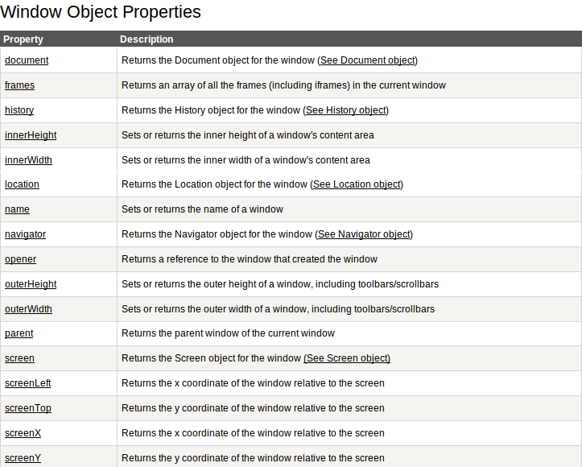
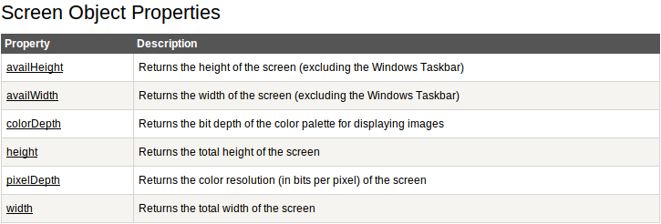
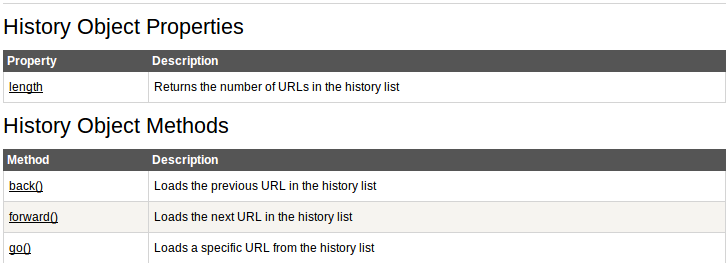
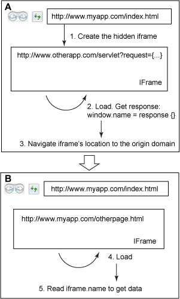

Javascript parts

Window

Navigator

Screen
Browser detection
Code of jQuery.browser, which is now moved to jquery-migrate plugin.
jQuery.uaMatch = function( ua ) {
ua = ua.toLowerCase();
var match = /(chrome)[ \/]([\w.]+)/.exec( ua ) ||
/(webkit)[ \/]([\w.]+)/.exec( ua ) ||
/(opera)(?:.*version|)[ \/]([\w.]+)/.exec( ua ) ||
/(msie) ([\w.]+)/.exec( ua ) ||
ua.indexOf("compatible") < 0 &&
/(mozilla)(?:.*? rv:([\w.]+)|)/.exec( ua ) || [];
return {
browser: match[ 1 ] || "",
version: match[ 2 ] || "0"
};
};Modernizr is a JavaScript library that detects HTML5 and CSS3 features in the user’s browser.
Location & History

Loading scripts
<!doctype html>
<html>
<head>
<title>My App</title>
<!-- case 1 -->
<script type="text/javascript">
console.log('Code could be put here');
</script>
<!-- case 2 -->
<!--All scripts in head block the page until they are executed-->
<script src="external_script.js" type="text/javascript"></script>
<!-- Browser will not block rendering, when there is 'async'
attribute in 'script' tag, is not supported in IE < 10 and Opera-->
<script src="script.js" type="text/javascript" async></script>
<!-- 'defer' is the same as 'async', but it keeps the order: small2.js
will be executed after large2.js. Is not supported in Opera-->
<script src="large2.js" type="text/javascript" defer></script>
<script src="small2.js" type="text/javascript" defer></script>
<noscript>
This page requires a JavaScript-enabled browser.
</noscript>
</head>
<body>
...
<!-- Will be executed after rendering of the page -->
<script src="external_script.js" type="text/javascript"></script>
</body>
</html>
Work with DOM
Access via developer's console
- $0 - access to the selected dom node via console
- $('.myClass') - query via console

DOM Node attributes
- <Node>.nodeType - returns an unsigned short representing the type of the node(1 - element node, 3 - text node, 8 - comment node, etc.)
- <Node>.className - returns the 'class' attribute of node
- <Node>.tagName/nodeName - returns node name
- <Node>.innerHTML - returns the content of DOM node
- <Node>.nodeValue/data - the same as innerHTML, but for text nodes/comments
- <Node>.hasAttribute(name) - returns true if node has such attribute
- <Node>.getAttribute(name) - returns attribute of node with a given name
- <Node>.setAttribute(name, value) - set value for the given attribute
- <Node>.removeAttribute(name) - remove attribute


DOM query
- <document>.getElementById(id) - returns document with provided id
- <Node>.getElementsByTagName(tagName) - returns array of nodes with provided tagName
- <Node>.getElementsByName(name) - returns array of nodes with provided name
- <Node>.getElementsByClassName(name) - returns array of nodes with provided class
- <Node>.querySelector/querySelectorAll(selector) - return one/array of element(s) by selector
querySelector/querySelectorAll return local copy.
Methods getElementsBy* return live data. Example
Methods getElementsBy* return live data. Example
DOM traversing
- document.documentElement - reference to <html>
- document.body - reference to <body>
- <Node>.children - returns children nodes(without text nodes)
- <Node>.appendChild() - insert a Node as the last child node of this element
- <Node>.insertBefore() - insert the first Node given in a parameter before the second, child of this element, Node.
- <Node>.removeChild() - remove a child node from the current element, which must be a child of the current node.
Tables
- table.rows — list of all rows of the table.
- table.tHead/tFoot — reference to THEAD, TFOOT.
- table.tBodies — list of all TBODY elements.
- tr.cells — the list of TD/TH
- tr.rowIndex — row index in the table.
- <table>.insertRow(index)
- <table>.deleteRow(index)
- <tr>.insertCell(index)
- <tr>.deleteCell(index)
Forms

- document.forms.myForm - form with name 'myForm'
- document.forms[0] - the first form in document
- the same for form elements - form.myEl; form.elements[0]
Events

- Event types
- in html - <input type="text" onclick="handler()"/>
- elem.onclick = handler
- elem.addEventListener(eventType, handler, useCapture)/removeEventListener(listener)
- elem.attachEvent(eventType, handler)/detachEvent(listener) for IE9-
- Example 1, Example 2
Event Object Details
- event.type — 'click'|'mousedown'|'keyup' etc.
- event.target — node, that has fired the event(event.srcElement for IE9-)
- event.currentTarget — node, event has been attached to(doesn't work under IE9-)
- event.which - mouse button (event.button for IE9-)
- event.clientX / event.clientY - mouse cursor coordinates related to the window
- event.pageX / event.pageY - mouse cursor coordinates related to the document(not supported in IE9-)
- event[altKey|ctrlKey|shiftKey|metaKey] - alt, ctrl, shift, meta(for Mac) keys is pressed
- event[deltaY|detail|wheelDelta] - delta step of mouse scroll
- event.stopPropagation() - cancel event's bubbling (event.cancelBubble = true for IE9-)
-
- event.preventDefault() - stop default browser's action (event.returnValue = false for IE9-)
- function handler() {return false;}
Javascript animation
- Animation in JS is provided by continious changing node's styles
- setInterval vs recursive setTimeout
- softer animation via easings
JSON
JSON (JavaScript Object Notation) is an open standard format that uses human-readable text to transmit data objects consisting of attribute–value pairs. It is used primarily to transmit data between a server and web application, as an alternative to XML.
JSON.stringify/JSON.parse methods in browser - for working with JSON format.
For old IE version(IE8-) there are different libraries(for example, json-js) for JSON parsing
The most painful problem during converting JSON structure.
For old IE version(IE8-) there are different libraries(for example, json-js) for JSON parsing
The most painful problem during converting JSON structure.
AJAX
AJAX(Asynchronous Javascript and XML) - it's a way to make dynamic requests to server without reloading the web page and based on XMLHttpRequest object
- readyState - request state number(0-4)
- responseText/responseXML - server's response
- onreadystatechange - function status handler
- status - http response status (200, 404, etc.)
- open()
- method - "GET", "POST", "PUT", "DELETE", etc.
- url - The URL to which to send the request.
- async - An optional boolean parameter, defaulting to true, indicating whether or not to perform the operation asynchronously.
- user - The optional user name to use for authentication purposes; by default, this is an empty string.
- password - The optional password to use for authentication purposes; by default, this is an empty string.
- send(data) - sends the request to the server
- abort() - cancel sending request (by there are problems under IE)
Cross Domain Requests
- XhrIframeProxy
- window.name
- window.postMessage
- JSONP
- CORS
The Same Origin Policy Restrictions
The same origin policy (SOP) prevents scripts loaded from one origin to get or manipulate properties or methods in the documents from another origin.Exceptions:
- JavaScript with <script src="..."></script>. Error messages for syntax errors are only available for same-origin scripts.
- CSS with <link rel="stylesheet" href="...">. Due to the relaxed syntax rules of CSS, cross-origin CSS requires a correct Content-Type header. Restrictions vary by browser.
- Images with <img>. Supported image formats include PNG, JPEG, GIF, BMP, SVG, ...
- Media files with <video> and <audio>.
- Plug-ins with <object>, <embed> and <applet>.
- Fonts with @font-face. Some browsers allow cross-origin fonts, others require same-origin fonts.
- Anything with <frame> and <iframe>.
XhrIframeProxy

function sendMsg(msg){
var frame = document.createElement(“iframe”);
var baseProxy = “http://www.otherapp.com/proxy.html”;
var request = {frameName:’otherApp’,data:msg};
frame.src = baseProxy+”#”+encodeURI (util.toJson(request));
frame.style.display=”none”;
document.body.appendChild(frame);
};
window.onLoad = function(){
var hash = window.location.hash;
if(hash && hash.length>1){
var request = hash.substring(1,hash.length);
var obj = util.fromJson(decodeURI (request));
var data = obj.data;
// getData in a function defined in B
parent.frames[obj.frameName].getData(…);
}
}window.name
window.postMessage

//Sending message from http://www.otherapp.com/index.html
function postMessage(msg){
var targetWindow = parent.window;
targetWindow.postMessage(msg,"*");
}
function handleReceive(msg){
var object = util.fromJson(msg);
if(object.status == “ok”){
//continue to do other things
……
}else{
//retry sending msg
……
}
}
window.addEventListener("message", handleReceive, false);
window.onLoad = function(){
postMessage("already loaded");
}//Receiving message at http://www.myapp.com/index.html
function handleReceive(event){
if(event.origin != "http://www.otherapp.com")
return;
//process data
……
var otherAppFrame = document.getElementById(“otherApp”);
otherAppFrame.postMessage(“{status:’ok’}”,”http://www.otherapp.com”);
}
window.addEventListener("message", handleReceive, false);
JSONP
<script type="text/javascript">
// This is our function to be called with JSON data
function showPrice(data) {
alert("Symbol: " + data.symbol + ", Price: " + data.price);
}
var url = “/action.php?attr='anything'&callback=showPrice”;
// this shows dynamic script insertion
var script = document.createElement('script');
script.setAttribute('src', url);
// load the script
document.getElementsByTagName('head')[0].appendChild(script);
</script>
//Response
showPrice({symbol: 'IBM', price: 91.42});
// alerts: Symbol: IBM, Price: 91.42
Ready JSONP examples:
CORS
- Is supported under Chrome 3+, Firefox 3.5+, Opera 12+, Safari 4+, IE8+
- example of creating CORS request
CORS HTTP Request
OPTIONS /cors HTTP/1.1
Origin: http://api.bob.com
Access-Control-Request-Method: PUT
Access-Control-Request-Headers: X-Custom-Header
Host: api.alice.com
Accept-Language: en-US
Connection: keep-alive
User-Agent: Mozilla/5.0...Access-Control-Allow-Origin: http://api.bob.com
Access-Control-Allow-Methods: GET, POST, PUT
Access-Control-Allow-Headers: X-Custom-Header
Content-Type: text/html; charset=utf-8